Updates and trust
Update channel Built
The client updates itself from a signed manifest. Nothing the network delivers is trusted until the signatures check. This page is the reference for the format and for what the client verifies.
Source of truth. The client's own description is docs/UPDATE_CHANNEL.md. This page follows it and adds a worked example. The updater is only compiled with -DAUTOUPDATE=ON, and a release build fails while a channel's keys are placeholders.
Channels #
| Channel | Built from | Signatures | Manifest valid for | State |
|---|---|---|---|---|
stable | A release started by hand on main | CI key and the owner's hardware key | up to 90 days | Planned no stable release yet |
canary | Every push to main | CI key | up to 30 days | Built published |
dev | Every push to dev | CI key | up to 14 days | Built nothing published yet |
Canary and dev versions carry the channel (0.1.0-canary.9), are marked "Unstable build, best effort." in the update dialog, and are GitHub prereleases; the last 10 of each are kept. The channel is chosen with kog_update_channel or in the settings, never from the network. Switching to a channel with an older version asks for confirmation in that session.
A client checks a channel only against that channel's own keys, and the channel name is inside the signed text, so a manifest signed for one channel is refused on another.


Diagram source as text (Mermaid)
flowchart LR
subgraph CL["Compiled into the client: kog_update_pubkey.h"]
direction TB
subgraph ST["stable (planned, keys are placeholders)"]
S1["CI keys a and b"]
S2["Owner hardware keys"]
S3["Offline backup CI key"]
end
subgraph CA["canary"]
C1["CI keys a and b"]
end
subgraph DE["dev"]
D1["CI keys a and b"]
end
end
M1["stable/update.json<br/>.sig and .sigb"] --> ST
M2["canary/update.json<br/>.sig"] --> CA
M3["dev/update.json<br/>.sig"] --> DE
classDef planned stroke-dasharray:6 4
class S1,S2,S3,M1 plannedEndpoints of client.kog.tw #
The site is served by GitHub Pages from the branch published of kog-client-updates. Manifests and this website are published by separate jobs and never overwrite each other.
| Address | What | State |
|---|---|---|
/canary/update.json, /canary/update.json.sig | Manifest and signature of the canary channel | Built published |
/dev/update.json, /dev/update.json.sig | Manifest and signature of the dev channel | Built nothing published yet (the address answers 404) |
/stable/update.json, .sig, .sigb | Stable channel, two signatures. The start page also tries /update.json. | Planned no stable release yet (404) |
/builds/allowlist.json | Signed list of released build hashes (idea only) | Planned |
| GitHub releases | The packages and client binaries a manifest points to (immutable releases) | Built |
raw.githubusercontent.com/KoG-teeworlds/kog-client-updates/published/CHANNEL/update.json | Fallback host of the client, on another name than the primary. Same files. | Built |
The names stable, canary, dev, base, releases and builds belong to the release data and are never used by website pages.
The manifest, format 2 #
update.json is JSON. A field that is absent means the old behaviour. Unknown fields are ignored by the client but are signed with the rest.
| Field | Required | Meaning |
|---|---|---|
format | yes | The format number, currently 2. |
channel | yes | Must equal the channel the client asked for. |
version | yes | The version offered, with the channel in its form for canary and dev. |
sequence | yes | Rises with every manifest of a channel. A client refuses one that is not higher than the last it applied. |
issued, expires | yes | Unix seconds. An expired manifest, or one from the future, is refused. The window is at most the channel's maximum. |
platforms.linux-x86_64.client, platforms.win64.client | for updating | The client binary: sha256, size, url. |
files[] | yes (may be empty) | Data files to update: path below data/, sha256, size, url, optional mirrors[] tried in order. Executables never go through files. |
remove[] | no | Data paths to delete. |
packages[] | no | name, sha256, size, url of the zip, dmg and tar.xz that the download page shows. The updater ignores it. |
rollout_percent | no | 0 to 100: the share of installs that get the update. The bucket comes from a random per-install value in the config and is never sent anywhere. |
halted | no | The update is withdrawn: clients do not apply it. |
min_version | no | An older client shows a blocking "update required" dialog that explains why. Never silent. |
notes_url | no | Release notes link, only on client.kog.tw or github.com/KoG-teeworlds. |
changes[] | no | Up to 3 plain-text lines of at most 120 characters. |
An annotated example #
The shape is taken from the published canary manifest. The hashes are shortened and the URLs trimmed, so this is an illustration and not a file to verify. Comments after // are not part of JSON.
{
"format": 2, // required, must be 2
"channel": "canary", // must equal the channel the client asked for
"version": "0.1.0-canary.9", // the form of the channel
"sequence": 3, // must be higher than the last applied on this channel
"issued": 1795521981, // Unix seconds, not in the future
"expires": 1798113981, // 30 days later: the canary maximum
"files": [], // data files: path, sha256, size, url, mirrors[]
"platforms": {
"linux-x86_64": { "client": { "sha256": "1b318184...", "size": 7814888, "url": "https://github.com/KoG-teeworlds/kog-client/releases/download/canary-9/..." } },
"win64": { "client": { "sha256": "0cb0e106...", "size": 5125632, "url": "https://github.com/KoG-teeworlds/kog-client/releases/download/canary-9/..." } }
},
"remove": [],
"packages": [ { "name": "...", "sha256": "...", "size": 0, "url": "..." } ] // for the download page only
}The matching update.json.sig of that manifest begins kog-update-sig-v1 1cb978aa d7465f8c....
Signature file and key ids #
update.json.sig is one line:
kog-update-sig-v1 KEYID SIGNATUREkog-update-sig-v1is the format tag.SIGNATUREis Ed25519 over the exact bytes ofupdate.json, 128 hex characters. It is checked with Monocypher.KEYIDis the first 8 hex characters of the public key, so a verifier can see which key was used.
The stable channel will have a second signature, update.json.sigb, in OpenSSH format (ssh-keygen -Y sign -n kog-client-release, key type sk-ssh-ed25519@openssh.com) made with a hardware key. The client checks the application, that the key was touched (user presence), the namespace and the signature. See release signing.
Per-channel keys and rotation #
Each channel has two CI keys, a and b, compiled into the client in kog_update_pubkey.h (KOG_<CHANNEL>_CI_KEYS). A key of one channel cannot sign another channel, and the channel name is part of the signed text.
To replace a CI key without leaving installed clients behind, the client always ships both slots and the signing side holds one active key:
- The client in the field already trusts the key that will be used next, because a and b are always shipped.
- The active slot is switched to the other one.
- The retired slot gets a fresh key; its public half goes into the client through a reviewed change.
- A client release with that change is shipped before the next rotation. Only then may the slot that was just filled become active.
A key that is not shipped in a client release is never made active. For stable, the owner's hardware keys (KOG_STABLE_OWNER_KEYS) and an offline backup CI key (KOG_STABLE_BACKUP_CI_KEYS) are separate from the CI keys. The stable keys in the client are still placeholders (KOG_UPDATE_KEYS_PLACEHOLDER_STABLE 1): a channel with placeholder keys does not update.
How the client verifies an update #


Diagram source as text (Mermaid)
sequenceDiagram
autonumber
participant C as Client
participant P as client.kog.tw
participant F as Fallback host
participant G as GitHub releases
C->>P: GET channel/update.json and update.json.sig
alt primary host does not answer
C->>F: same two files, other host name
end
Note over C: Signature against this channel's compiled-in keys
Note over C: Channel, sequence, expiry, version, halted, rollout, min_version
C->>G: GET each changed file (allow-listed hosts only)
G-->>C: file bytes
Note over C: SHA-256 and size of every file, before it replaces anything
Note over C: Keep the previous version beside the new one
Note over C: Start marker written, removed at the start screen
Note over C: Two starts without reaching it: restore the previous version- Fetch. The manifest and its signature come from
https://client.kog.tw/CHANNEL/update.json, then, if that fails, from the fallback host. The fallback has another name because GitHub redirectsgithub.ioto the custom domain. Offline or unreachable is quiet; the settings show the last check and its result. - Signature. Checked against the public keys of that channel only (both signatures for stable). Trust never depends on the host or on TLS. The channel inside the payload must equal the configured one.
- Rollback and replay protection.
sequenceis higher than the last one applied on that channel; the manifest has not expired and is not from the future; the version has the channel's form; a version older than the installed one is only applied after the user confirmed a channel switch; and a version the client rolled back from before (bad-version memory) is not tried again. - Policy fields.
halted, therollout_percentbucket andmin_version. - Files. Paths and URLs must be on allow-lists:
github.com/KoG-teeworlds/kog-client/releases/download/andclient.kog.tw. Every file's SHA-256 and size are checked before it replaces anything, with enough free disk space, a per-file retry, then the next mirror. - Fail-safe. The previous version stays beside the new one (
.kogprev), replaced atomically. A start marker is written on launch and removed when the start screen is reached; after 2 starts that did not reach it, the client restores the previous version and remembers the bad one. Settings are never replaced; a config backup is made when the version changes.
What these checks do not cover is on the security page. To check a published manifest yourself, see verify a download.
Not verified. The Windows free-disk check and the executable-bit handling were not run on Windows, and the updater has had little real-world use. Hardware-key signatures were tested with a software emulation of the OpenSSH format, not with a real security key.